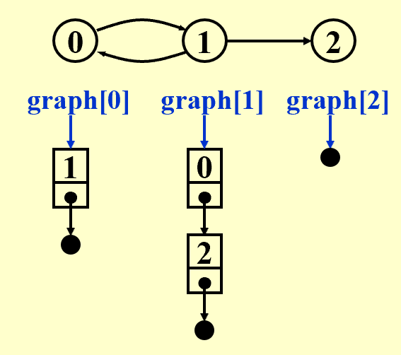
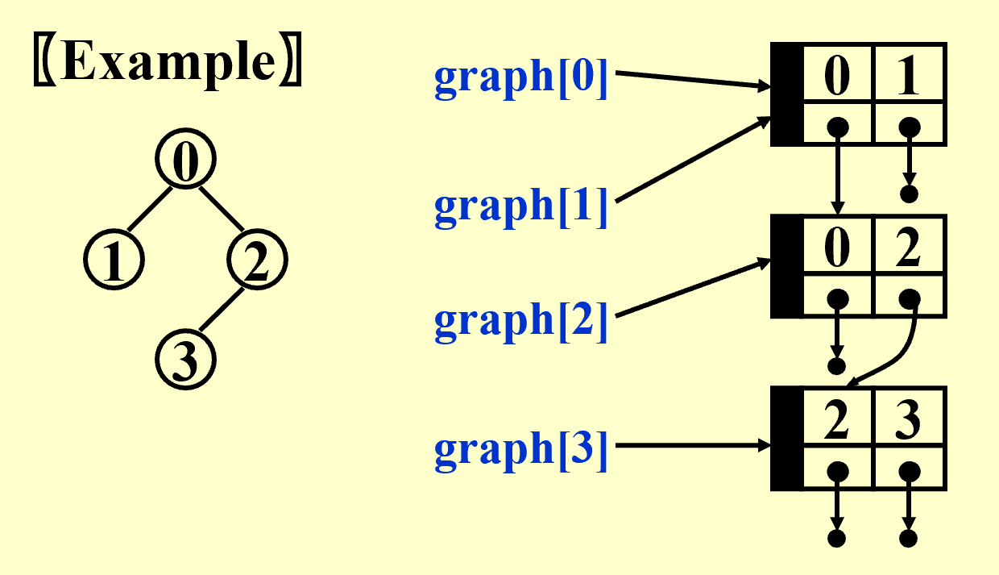
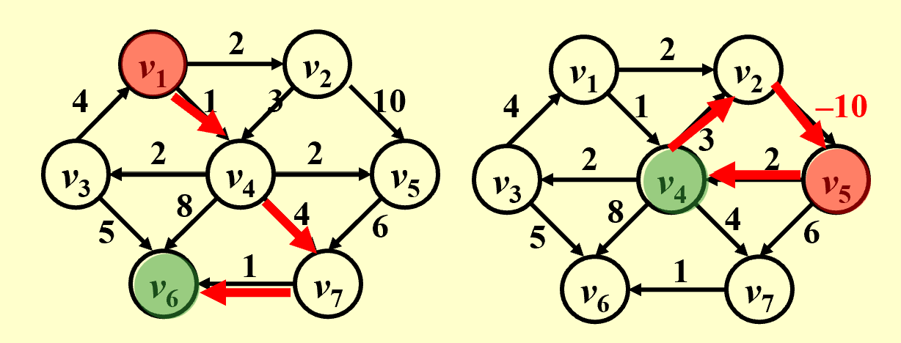
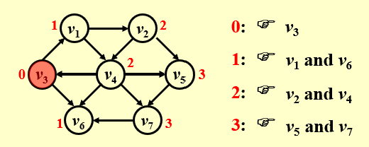
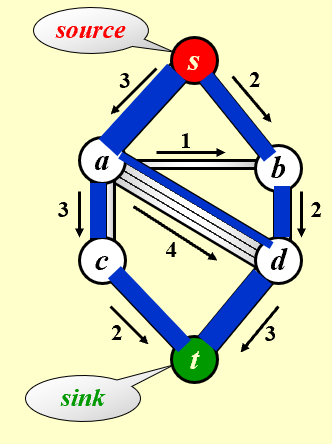
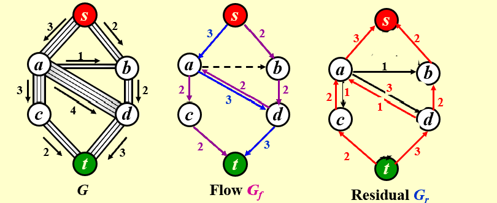
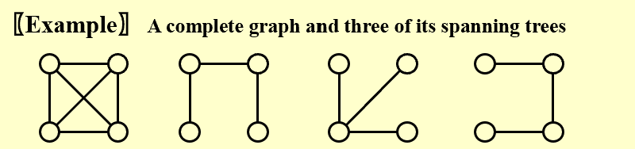

Graph Algorithms¶
1 定义¶
一些基本概念¶
-
图由两个集合组成，表示为 \(G(V, E)\)
- 点集合 vertices ，表示图中所有的节点
- 边集合 edges ，表示连接这些节点的线段或指向
约束
- 图可以没有边只有点，而不能只有边
- 不允许边的两端连接同一个点 self loop
- 不考虑无向图的两个点之间有超过一条边，不考虑有向图的两个点之间有超过两条边
-
无向图 Undirected graph ，边没有方向，仅表示两个节点存在关联 \((v_i, v_j) = (v_j, v_i)\)
-
有向图 Directed graph / Digraph ，边有方向，通常用箭头表示 \(<v_i, v_j> \ne <v_j, v_i>\)
-
完全图 Complete graph ，边的数量达到最大
- 对于一个有 \(n\) 个节点的图，无向图最多有 \(\frac{n(n-1)}{2}\) 条边，有向图最多有 \(n(n-1)\) 条边
-
子图 Subgraph ，它的点和边都包含在图中
-
路径 Path from \(v_p\) to \(v_q\) ，从点 \(v_p\) 到 \(v_q\) 的一个点序列，其中每两个相邻点之间都存在边
- 路径长度 Length of a path ，一条路径上边的数量
-
简单路径 Simple path ，路径中的点不重复出现
-
环 Cycle ，路径的第一个点和最后一个点是同一个点，其他点只出现一次
-
连通性 Connectedness
- 对于无向图，如果两个点之间有路径，则称这两个点连通 connected ；如果不重复出现的点中，任意两个之间都存在路径，则称这个图连通 connected
事实上，一棵树就是一个连通的无环图
- 对于无向图，如果两个点之间有路径，则称这两个点连通 connected ；如果不重复出现的点中，任意两个之间都存在路径，则称这个图连通 connected
-
Component of an undirected G
-
有向无环图 A DAG ，directed acyclic graph
-
强连通图 Strongly connected directed graph G ，对于有向图，任意两个点 \(v-i\) 和 \(v_j\) 之间，既存在从 \(v_i\) 到 \(v_j\) 的路径，又存在从 \(v_j\) 到 \(v-i\) 的路径
- 如果是任意两个点之间只存在一个方向的路径，那么称为弱连通 weakly connected
-
Strongly connected component
-
度 Degree ，一个点上连接的边的数量
- 对于有向图，以该点为起点的边的数量称为出度 out-degree ，以该点为终点的边的数量称为入度 in-degree
图的表示¶
邻接矩阵 Adjacency Matrix¶
对于一个有 \(n\) 个点的图，使用一个 \(n \times n\) 的二维数组 \(A\) 来表示，如果点 \(v-i\) 和 \(v_j\) 之间有边，则记 \(A[i][j] = 1\) ，否则记为 0 。
不难发现，对于无向图 \(A\) 是对称的矩阵。
这个方法在图的边很少的情况下，会浪费大量存储空间。
邻接表 Adjacency List¶
为每个点建立一个单链表，其中所有节点表示从该点出发能到达的点。
例子

邻接多重表 Adjacency Multilists¶
在邻接表中，每一条边都会存储两次，现在，邻接多重表把每条边只储存一次，被它连接的两个点共享。
例子

2 拓扑排序 Topological Sort¶
定义¶
拓扑排序是对图的点集进行线性排序，满足对于任意两点 \(i\) 、\(j\) ，如果 \(i\) 是 \(j\) 的前驱，则序列中 \(i\) 在 \(j\) 之前。
事实上，能够进行拓扑排序的前提是图必须是有向无环图 DAG 。
3 最短路径算法 Shortest Path Algorithms¶
给定： - 一个图 \(G = (V, E)\) - 成本函数 \(c(e) ， e \in E(G)\)
那么从源点到终点的路径 \(P\) 的长度为 \(\sum_{e_i \in P} c(e_i)\) 。
单源最短路径 Single-Source Shortest-Path Problem¶
问题描述¶
给定： - 带有权重的图 \(G = (V, E)\) - 图中一个确定的源点 \(s\)
找到图中从 \(s\) 到其他任何一个点的最短路径。

注意
- 如果图中的边有权重为负数，那么不一定存在最短路径，可能会陷入负权环 negative-cost cycle 。
- 如果图中没有负权环，那么定义从 \(s\) 到 \(s\) 的最短路径为 0 。
无权的情况 Unweighted Shortest Paths¶
所有边的权重都为 1 ，最短路径就是经过边数最少的路径。

核心思路是采用广度优先搜索 Breadth-first search（BFS）： - 从源点开始，给能到达的相邻点设距离为 1 ； - 再从距离为 1 的点出发，给相邻能到达、且未访问过的点距离设为 2 ； - 以此类推。
算法
维护一张表 T 来记录每个点的信息，其中：
- T[i].Dist 表示从 \(s\) 到点 \(v_i\) 的距离
- T[i].Known 标记 \(v_i\) 是否被访问过
- T[i].Path 记录 \(v_i\) 在路径中的上一个点
维护一个队列：
- 将源点 \(s\) 入队
- 只要队列不为空，就取出一个点 \(v\)
- 遍历 \(v\) 的所有邻接点 \(w\) ，如果 \(w\) 尚未被访问，则修改 \(w\) 在表 T 中的信息，然后入队
- 当队列为空时，循环结束
代码实现
void Unweighted( Table T )
{ /* T is initialized with the source vertex S given */
Queue Q;
Vertex V, W;
Q = CreateQueue (NumVertex ); MakeEmpty( Q );
Enqueue( S, Q ); /* Enqueue the source vertex */
while ( !IsEmpty( Q ) ) {
V = Dequeue( Q );
T[ V ].Known = true; /* not really necessary */
for ( each W adjacent from V )
if ( T[ W ].Dist == Infinity ) {
T[ W ].Dist = T[ V ].Dist + 1;
T[ W ].Path = V;
Enqueue( W, Q );
} /* end-if Dist == Infinity */
} /* end-while */
DisposeQueue( Q ); /* free memory */
}
这个方法的时间复杂度为 \(O(|V| + |E|)\) 。
有权的情况 Weighted Shortest Paths¶
采用 Dijkstra 算法（要求边权不为负数），核心是贪心策略，每次访问当前距离源点最近的点。
算法
仍然维护一张表 T 来记录每个点的信息，其中：
- T[i].Dist 表示当前从 \(s\) 到点 \(v_i\) 的最短距离
- 初始时，源点记为 0 ，其他点记为 \(\infty\)
- T[i].Known 标记 \(v_i\) 是否被访问过
- T[i].Path 记录 \(v_i\) 在当前路径中的上一个点
不断重复以下步骤，直到收敛： - 在所有未访问点中，选择当前路径最短的点 \(v\) - 事实上，此时 \(v\) 的路径距离就是最终最短的距离 - 将 \(v\) 标记为已访问，此后的路径距离不再改动 - 遍历与 \(v\) 邻接的所有未访问点，如果经过 \(v\) 的新路径更短，则更新距离和前驱节点
寻找路径距离最小的未访问点
-
直接遍历全部未访问点，复杂度是 \(O(|V|^2)\) ，适合用于稠密图（边比较少）
-
把未访问点放进最小堆，复杂度是 \(O(|E| \log{|V|})\) ，适合用于稀疏图（边比较多）
代码实现
void Dijkstra( Table T )
{ /* T has been initialized */
Vertex V, W;
for ( ; ; ) {
V = smallest unknown distance vertex; // TWO implementations
if ( V == NotAVertex )
break;
T[ V ].Known = true;
for ( each W adjacent from V )
if ( !T[ W ].Known )
if ( T[ V ].Dist + Cvw < T[ W ].Dist ) {
Decrease( T[ W ].Dist to
T[ V ].Dist + Cvw );
T[ W ].Path = V;
} /* end-if update W */
} /* end-for( ; ; ) */
}
带有负权边的情况 Graphs with Negative Edge Costs¶
Dijkstra 算法遇到负权边会失效，为了解决这个问题，核心思路是维护一个队列，管理经过更新后距离变小、可能影响到邻居的点，并记录点的出队次数，超过 \(|V|\) 之后就终止程序，避免陷入无限循环。
算法
- 初始化把源点 \(s\) 入队
- 只要队列不为空就一直执行：
- 出队一个点 \(v\)
- 遍历 \(v\) 的邻接点 \(w\)
- 如果 \(w\) 的经过 \(v\) 的路径距离比原来短，就更新 \(w\) 的距离，并且把 \(w\) 入队（原来 \(w\) 就在队中就不用再入队了）
代码实现
void WeightedNegative( Table T )
{ /* T has been initialized */
Queue Q;
Vertex V, W;
Q = CreateQueue (NumVertex ); MakeEmpty( Q );
Enqueue( S, Q ); /* Enqueue the source vertex */
while ( !IsEmpty( Q ) ) {
V = Dequeue( Q );
for ( each W adjacent from V )
if ( T[ V ].Dist + Cvw < T[ W ].Dist ) {
T[ W ].Dist = T[ V ].Dist + Cvw;
T[ W ].Path = V;
if ( W is not already in Q )
Enqueue( W, Q );
} /* end-if update */
} /* end-while */
DisposeQueue( Q ); /* free memory */
}
无环图 Acyclic Graphs¶
对于一个无环图，可以直接按照拓扑排序来选点（不必在当前未访问点中取距离最小的了），因为拓扑序中，处理到当前点 \(v\) 时，所有能达到 \(v\) 的点都处理完了，不会再产生影响。
这样，时间复杂度降低到 \(T = O(|E| + |V|)\) 。
应用
AOE 网
4 网络流 Network Flow Problems¶
例子
如下图，考虑从源点 \(s\) 到汇点 \(t\) 的最大流

网络流的一个重要性质是，除了源点和汇点，其他任意一个点都满足流入等于流出。
算法¶
一个简单的思路是： - 找到任意一条从源点到汇点的通路（增广路 augmenting path） - 把这条路径上最小的容量作为整个路径的容量，在图中减去这一条路径的容量 - 更新图，移除剩余容量为 0 的边 - 重复以上过程，直到找不到从源点到汇点的通路
但是，这个思路的问题是，选择任意通路不一定是全局最好的通路。为此，引入残量图 residual graph ，使得算法选边能够后悔，其中边的权重等于流量

对容量都为整数的情况的分析¶
在寻找增广路的时候，优先选择容量大、边数量少的路径。
5 最小生成树 Minimum Spanning Tree¶
定义¶
图的一颗生成树是树状结构的子图，包含图的所有点和部分边。
例如：

生成树的性质
- 最小生成树的“最小”，指生成树的所有边权重之和最小；
- 最小生成树是无环的，边的数量等于点的数量减一；
- 图存在最小生成树的充要条件是该图连通；
- 在生成树中加一条边，就会形成一个环。
Prim's Algorithm¶
通过贪心的策略构建最小生成树： - 确定一个点作为根节点； - 每次长出的边，要满足和已有生成树的点相连但不属于已有生成树，不产生环，权重最小； - 重复上述过程，直到最小生成树覆盖所有点。
Kruskal's Algorithm¶
同样是一种采取贪心策略构建最小生成树的算法，核心思路是每次挑剩下的权重最小的边，把两颗树连起来。
代码实现
void Kruskal ( Graph G )
{ T = { } ;
while ( T contains less than |V|-1 edges
&& E is not empty ) {
choose a least cost edge (v, w) from E ;
delete (v, w) from E ;
if ( (v, w) does not create a cycle in T )
add (v, w) to T ;
else
discard (v, w) ;
}
if ( T contains fewer than |V|-1 edges )
Error ( “No spanning tree” ) ;
}
时间复杂度 \(T = O(|E| \log{|E|})\)